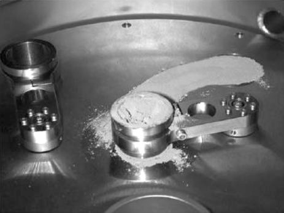
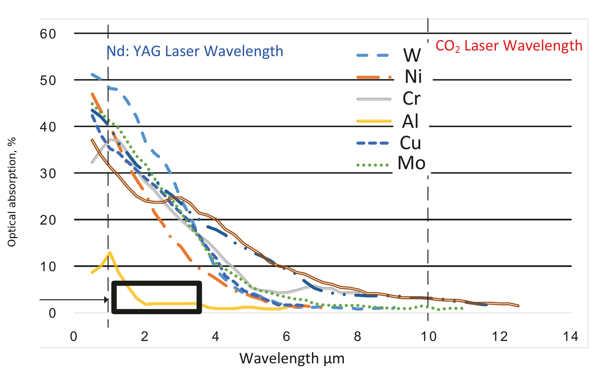
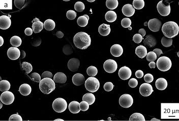
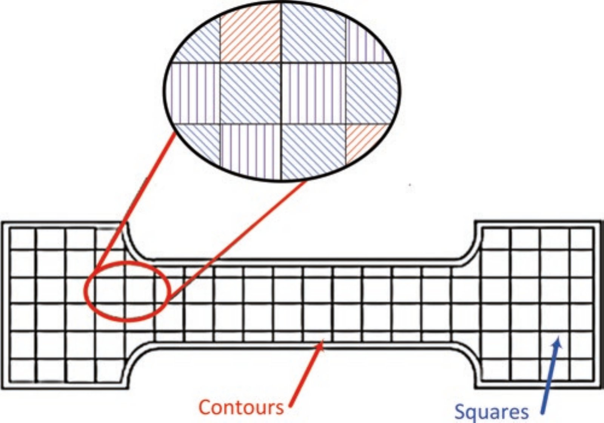
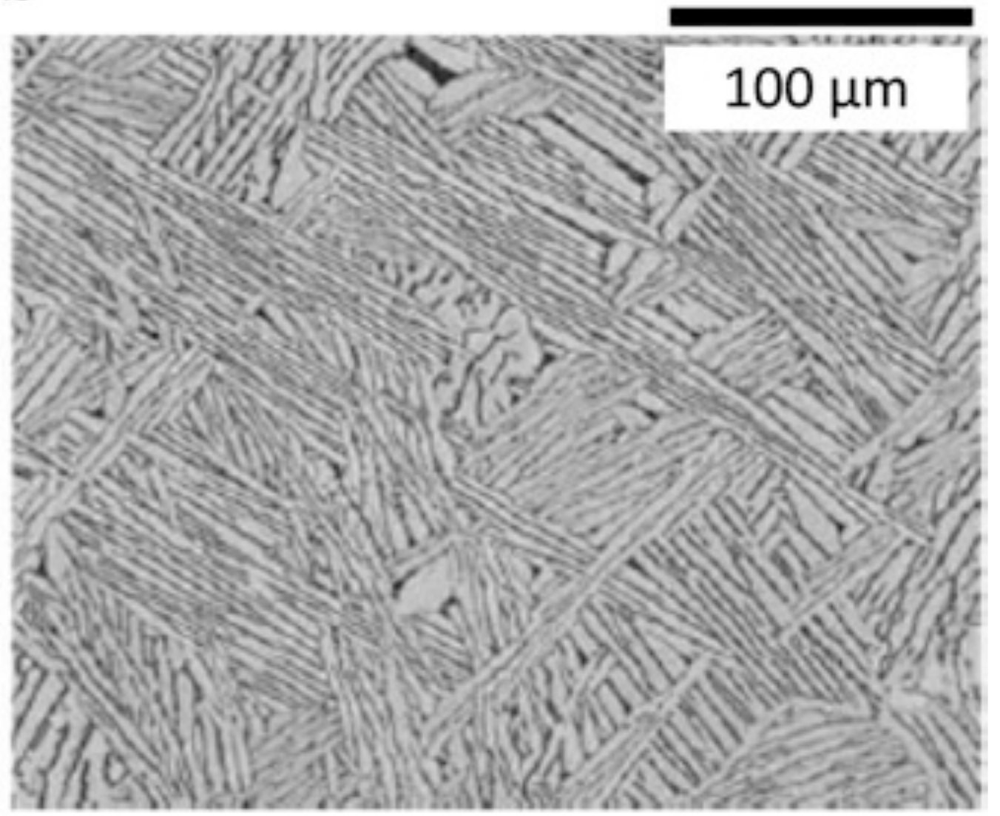

Промышленные технологии аддитивного производства
Как металл плавят в порошковом слое, почему результат зависит от порошка и ванны расплава и какие операции превращают напечатанную заготовку в медицинское изделие.
После лекции вы сможете
- сопоставить промышленные процессы по форме подачи материала, способу соединения и операциям после построения;
- рассчитать номинальную плотность подведенной энергии и объяснить, почему по ней нельзя определить режим ванны или вид дефекта;
- различить задачи отжига, горячего изостатического прессования и механической обработки, а также валидацию процесса и приемку изделия.
Как различать процессы аддитивного производства
≈ 13 мин · слайды 3–13
У модульной вертлужной чашки эндопротеза две поверхности с разными функциями. Наружный пористый слой предназначен для контакта с костью и ее врастания. Внутренняя поверхность сопрягается с вкладышем: здесь важны геометрия и шероховатость [25], рис. 2. Как изготовить чашку с такими разными поверхностями и какие измерения покажут, что каждая соответствует проекту?
ГОСТ Р 57558-2025 (термины 14–20) [1] и ISO/ASTM 52900:2021 [2] различают семь категорий. Это струйное нанесение связующего (BJT), прямой подвод энергии и материала (DED), экструзия материала (MEX), струйное нанесение материала (MJT), синтез на подложке (PBF), листовая ламинация (SHL) и фотополимеризация в ванне (VPP). Для сравнения зададим два вопроса: в каком виде поступает материал и за счет чего соединяются его порции? Например, при экструзии материал подают через сопло, а при фотополимеризации свет избирательно отверждает жидкий фотополимер в ванне.
Синтез на подложке (powder bed fusion, PBF) — процесс, в котором тепловая энергия избирательно сплавляет участки порошкового слоя.
В металлическом PBF источником энергии служит лазер (PBF-LB/M) или электронный пучок (PBF-EB/M). Луч сплавляет выбранные участки слоя: сечение детали и сечения предусмотренных опор. В рассматриваемом лазерном процессе окружающий порошок остается преимущественно рыхлым. В электронно-лучевом процессе предварительный нагрев может частично его спечь [6], гл. 5.
Листы, наплавка и гибридный станок
Металлическую деталь можно нарастить и без порошкового слоя. В листовой ламинации (sheet lamination, SHL) материал поступает листами, которые последовательно соединяют в пакет. В прямом подводе энергии и материала (directed energy deposition, DED) порошок или проволока плавятся точно в месте подачи.
| Способ | Как растет заготовка | Пример |
|---|---|---|
| Листовая ламинация (SHL) | Последовательно соединяют листы | Волокно укладывают в канал, затем сверху ультразвуком приваривают слои стальной фольги [4], § 2.1 |
| Прямой подвод энергии и материала (DED) | Порошок или проволока плавятся в месте подачи | На изношенную поверхность наплавляют металл |
Гибридная обработка не образует восьмой категории. Например, LASERTEC 65 DED hybrid сочетает DED и фрезерование: металл можно наплавить и обработать фрезой в одной системе координат, без переустановки [5]. Конкретный маршрут определяет, когда переходить от наплавки к резанию.
Один цикл синтеза на подложке
В рассматриваемой установке для каждого слоя повторяют четыре шага: подают порошок, распределяют его, сплавляют выбранные участки и опускают платформу. Питатель хранит запас порошка; разравниватель переносит порцию на рабочую поверхность. На фотографии можно распознать заполненный питатель по подписи к оригиналу.

Схема ниже показывает тот же цикл сбоку. Проследите сразу за деталью и за окружающим порошком: платформа опускается вместе с ними, и сверху освобождается место для следующего слоя. Толщина слоя на схеме увеличена для наглядности.
При постоянном шаге 40 мкм высота 50 мм соответствует 1250 слоям без учета дополнительных слоев. Каждый слой требует нанесения порошка, но длительность сканирования зависит и от площади сечения. В табл. 14.4 на с. 397 Gibson и др. приводят для рассматриваемых систем толщину слоя 20–100 мкм при лазерном и 100–200 мкм при электронно-лучевом синтезе [6]. Это примеры оборудования, а не пределы применимости технологий.
При заполнении сечения маршрут луча отличается от маршрута по контуру. Контур сканируют отдельно для формирования границы. Внутреннюю область можно разбить на участки: так сокращают длину непрерывного прохода и меняют распределение тепла. К этому вернемся при разборе стратегий сканирования.
Газовая среда, подогрев и учет партии порошка характеризуют конкретный технологический маршрут, а не определяют слово «промышленный». В обзоре тяжелых систем Gibson и др. приводят 1–1,5 кВт для импульсных лазеров и свыше 10 кВт для непрерывных [6], §§ 3.4.5–3.4.6, с. 65–66. Там же упомянуты многолазерные установки и камеры объемом до 1 м³. Эти примеры не задают сочетания объема камеры и мощности одного луча у одной машины.
Порошковые и струйные процессы
Лазер работает и с полимерным порошком, а капли бывают двух назначений. В таблице сопоставлены два порошковых и два струйных процесса.
| Процесс | Что поступает в зону построения | Как формируется изделие | Пример |
|---|---|---|---|
| PBF-LB/M | Металлический порошок | Лазер сплавляет участки детали и опор | Титановый имплантат [6] |
| PBF-LB/P: селективное лазерное спекание полимеров (SLS) | Подогретый порошок полиамида-12 (PA12) | Лазер соединяет частицы в выбранных участках слоя | Полиамидная деталь [7] |
| Струйное нанесение материала (MJT) | Капли самого сырья, например воска или фотополимера [1], термин 17 | Материал выборочно наносят каплями; фотополимер в данном примере отверждают ультрафиолетом | Фантом сердца с участками разной жесткости [8] |
| Струйное нанесение связующего (binder jetting, BJT) | Порошок и капли связующего | Связующее скрепляет частицы слоя | Цветная учебная модель кости [9] |
В MJT капли становятся материалом самой модели, поэтому состав можно менять в пределах одной детали. В BJT капли только связывают уже уложенный порошок. Металлической BJT-заготовке после построения нужен отдельный этап спекания.
Лазер и электронный луч
Поглощение лазерного излучения металлом зависит от длины волны. На графике по горизонтали отложена длина волны, по вертикали доля поглощенной энергии. Проследите кривую никеля: около 1 мкм поглощение заметно выше, чем при 10,6 мкм. Левая отметка относится к лазеру на неодимовом иттрий-алюминиевом гранате (Nd:YAG), правая к углекислотному (CO₂) лазеру; волоконные лазеры металлических установок работают в той же области, что Nd:YAG.

Тип источника энергии определяет рабочую среду установки. Лазер работает в камере с защитным газом. Электронный пучок отклоняют магнитными катушками, и ему нужен вакуум.
| Критерий | PBF-LB/M | PBF-EB/M |
|---|---|---|
| Источник энергии | Лазер | Электронный пучок |
| Рабочая среда | Защитный газ | Вакуум |
| Подогрев слоя | Зависит от машины и сплава | Пучок предварительно нагревает порошок |
| Опоры и порошок | Рыхлый порошок, металлические опоры | Частично спеченный порошок, опоры по геометрии |
| После построения | Удаление рыхлого порошка и опор | Разрушение спеченной оболочки и удаление опор |
Предварительный нагрев в PBF-EB/M уменьшает температурные перепады и частично спекает окружающий порошок. Поэтому после построения деталь приходится освобождать из спеченной оболочки. Количество опор в обоих процессах зависит от геометрии и режима (глава 5 в [6]).
Прямой подвод энергии и материала и струйное нанесение связующего
Схема сравнивает два способа подачи материала. В DED порошок или проволока плавятся в месте подачи, и за головкой остается металлический валик, связанный с подложкой. Наплавка подходит для наращивания заготовок и восстановления деталей. В металлическом BJT связующее удерживает частицы в сырой, или зеленой, заготовке. После извлечения из порошка из нее удаляют связующее и спекают ее в печи; при спекании металл уплотняется, а заготовка дает усадку, которую учитывают при назначении размеров [6].
Сравните заготовки сразу после прохода головки. В DED сформирован сплавленный валик, связанный с подложкой. В показанном металлическом BJT частицы пока удерживает связующее; связующее удаляют, затем заготовку спекают в печи. Эта последовательность не относится к цветной учебной модели кости из предыдущей таблицы.
В металлическом PBF порошок одновременно служит сырьем и средой построения. Тепло от свежего слоя отводится через сплавленный металл, опоры и плиту. Нужные размер, поверхность и свойства получают уже после построения, сочетая термические и механические операции. Следующие разделы идут по этой цепочке: сначала порошок, затем ванна расплава.
Мини-тест раздела
Три вопроса по разделу. Они войдут в итоговый тест; после верного ответа откроется разбор.
Шпаргалка раздела
- В металлическом PBF луч сплавляет выбранные участки детали и опор.
- Тепло отводят деталь, опоры и плита.
- Поглощение излучения металлом зависит от длины волны.
- Электронный пучок работает в вакууме, лазер в защитном газе.
- DED наплавляет металл в месте подачи. В рассматриваемом металлическом BJT связующее удаляют, затем заготовку спекают.
Порошок как материал и среда
≈ 12 мин · слайды 14–23
В лазерном PBF часть нанесенного порошка входит в деталь и опоры, остальной порошок преимущественно остается рыхлым. В электронно-лучевом процессе он может частично спекаться при подогреве. Для обоих процессов важно различать три объекта измерения: партию в таре, слой на платформе и сплавленный металл. Результат измерения одного объекта не описывает два других.
Если две партии дали разную плотность деталей при одинаковых настройках машины, сравните распределение размеров частиц, их форму и содержание кислорода. Само различие в плотности еще не показывает, какая из этих характеристик сыграла роль.
При одних настройках две партии дали детали разной плотности. Какие свойства порошка нужно сопоставить?
Подсказка: сравните размер и форму частиц, долю мелкой фракции и условия хранения.
Свойства партии меняют укладку слоя и состояние металла. Один средний размер не описывает партию: нужны гранулометрия, форма, кислород, текучесть и плотность уложенного слоя.
Гранулометрический состав — распределение частиц по размерам, обычно с указанием диапазона и среднего размера.
Сферичность — близость формы частицы к шару.
Сателлит — мелкая частица, приплавленная к поверхности крупной.
Размер и форма частиц влияют на перемещение порошка и заполнение промежутков. По одному из этих признаков нельзя установить, насколько плотно уложен слой: это измеряют отдельно.
Форма и размер частиц
На микрофотографии видны частицы разного размера, преимущественно округлой формы. Можно различить одиночную частицу и две соседние. Мелкая частица у поверхности крупной образует выступ. Если частицы сцеплены, выступ может мешать их перемещению при нанесении слоя.

В табл. 14.4 у Gibson и др. для рассмотренных систем указан размер частиц 15–80 мкм для лазерного PBF и 100–200 мкм для порошкового DED [6], с. 397. Для электронно-лучевого PBF часто используют более крупные частицы, чем для лазерного. Ни один из этих ориентиров не заменяет спецификацию партии для конкретного процесса.
Мелкие частицы заполняют промежутки между крупными. Плотная упаковка и хорошая текучесть не одно и то же, а распределение размеров не единственный фактор укладки [10] [11]. По одному среднему размеру нельзя судить о состоянии порошка или слоя.
Приплавленные частицы могут повышать шероховатость поверхности по сравнению с чистовой механической обработкой [6]. Они не заменяют спроектированный пористый слой. Hothi и др. отдельно измеряли пористую архитектуру снаружи чашки, шероховатость и отклонение от круглости в зоне сопряжения с вкладышем [25], методы и рис. 2. Свободный порошок в порах не выполняет функцию этой архитектуры: его удаление и результат очистки контролируют отдельно [3].
Текучесть и насыпная плотность
Текучесть — способность порошка перемещаться в условиях заданного испытания. При испытании с воронкой оценивают истечение порции под действием тяжести; это не измерение поведения частиц под движущимся ножом.
Насыпная плотность — масса порошка в единице объема без уплотнения.
Насыпную плотность измеряют в мерной емкости. На платформе порошок распределяет разравниватель, поэтому плотность слоя приходится измерять в условиях нанесения. Даже если две партии одинаково быстро вытекают из воронки, массы порошка в равных объемах слоя могут различаться.
В опыте NIST капсулы собирали нанесенный, но не сплавленный порошок на трех позициях платформы. По массе порошка и объему капсулы авторы определяли плотность слоя, а не плотность готовой детали. Для каждой позиции ниже приведено среднее по трем капсулам. В обоих построениях использовали исходный порошок никелевого сплава IN625. Для второго взяли не поданный ранее остаток из питателя; порошок, побывавший на платформе, предварительно убрали [10], § 2 и табл. 3.
| Серия | У подачи | Середина | У сборника |
|---|---|---|---|
| 1 | 4,722 | 4,700 | 4,675 |
| 2 | 4,742 | 4,719 | 4,707 |
В направлении от подачи к сборнику средние значения снизились на 0,047 и 0,035 г/см³, примерно на 1,0 и 0,7 % соответственно. На авторском графике слайда 16 ось начинается с 4,66 г/см³ и подчеркивает эту небольшую разницу. Точки обозначают места, а не моменты времени. Расширенная неопределенность 0,004 г/см³ при k = 2 относится к измерению плотности, не к разности двух средних.
Как мог возникнуть градиент? Перед движущимся ножом образуется валик порошка. По модели авторов часть мелких частиц просыпается к основанию этого валика, а часть крупных перемещается дальше [10], рис. 17–20. Сам градиент не доказывает, что причиной была именно сегрегация.
В том же исследовании для стали S17-4 сравнивали исходный и возвращенный после просеивания порошок. Для этой стали авторы отметили слабую тенденцию противоположного знака [10], § 4.1. Результаты для двух сплавов нельзя объединять в правило о повторном использовании или направлении градиента.
Кислород, влага и пыль
При хранении титанового порошка ограничивают его контакт с воздухом и влагой. Порошок держат в закрытой сухой таре. Для партии контролируют содержание кислорода и состояние порошка [6]. Защитный газ в камере нужен при построении, но не заменяет контроля сырья после хранения.
HSE обследовала три площадки в 2015 году. При открытых операциях, включая проверку и перенос порошка и ручную очистку, регистрировали кратковременные пики концентрации пыли [13], резюме отчета 2023 года. Сам факт пика не доказывает превышения предела экспозиции на любом рабочем месте. Риск вдыхания и риск взрыва облака горючей пыли требуют разных мер: например, местной вытяжки для открытых операций и выбора оборудования для безопасной уборки конкретного порошка [12].
Рециклинг порошка
Несвязанный порошок можно собрать, просеять и вернуть в работу, если партия соответствует установленным критериям. Пригодность оценивают по свойствам партии, а не только по числу построений [6].
Gibson и др. описали сохранение сферичности после 38 лазерных построений и изменение формы после 10–20 электронно-лучевых [6], § 14.4.2.4, с. 398. Это наблюдения в отдельных опытах, а не срок службы порошка. У Slotwinski и др. близкими оказались распределения размеров исходного и просеянного порошка стали 17-4 после четырех построений [11], § 3.4.1. Такой результат нельзя автоматически переносить на всю собранную массу.
Если после просеивания у партии Ti-6Al-4V измерили меньшую долю мелких частиц, установлен факт изменения гранулометрического состава. Это измерение не показывает, как изменились текучесть и содержание кислорода: для них нужны отдельные измерения на порошке. Шероховатость и прочность определяют на построенном образце.
Согласование порошка и слоя
Таблица сопоставляет характеристики отдельных систем из табл. 14.4 Gibson и др. [6], с. 397. Обратите внимание на единицы: размер частиц и высота слоя измеряются в микрометрах. Ни одна из этих величин не показывает, какой объем металла машина добавит за час.
| Процесс | Порошок, мкм | Слой, мкм |
|---|---|---|
| PBF-LB/M | 15–80 | 20–100 |
| PBF-EB/M | Как правило, крупнее, чем для лазерного PBF | 100–200 |
| Порошковый DED | 100–200 | 100–4000 |
В PBF толщина слоя задает шаг платформы, в DED это приращение высоты наплавки. В отдельном обзоре оборудования Gibson и др. приводят около 150 см³/ч для семейства PBF и порядка 1000 см³/ч для металлического DED [6], §§ 3.4.5–3.4.6, с. 65–66. Это объемные скорости для примеров двух семейств, а не прямое сравнение лазерной и электронно-лучевой машин. Они не равны массовой подаче порошка и не учитывают время подготовки или постобработки заказа.
Состояние порошка проверяют перед возвратом. Размеры и форма частиц, содержание кислорода, текучесть и плотность уложенного слоя характеризуют разные стороны процесса. Свойства построенной детали требуют собственных измерений.
Мини-тест раздела
Три вопроса по разделу. Они войдут в итоговый тест; после верного ответа откроется разбор.
Шпаргалка раздела
- Форма и размеры частиц влияют на укладку слоя.
- Текучесть и насыпная плотность не равны плотности уложенного слоя.
- У титана контролируют кислород и влагу.
- Металлическая пыль опасна при вдыхании и воспламенении.
- Возврат партии зависит от результатов контроля.
Ванна расплава: режимы и дефекты
≈ 14 мин · слайды 24–34
Пятно лазера перемещается по поверхности слоя. На его пути образуется ванна жидкого металла. Чтобы дорожки образовали сплошное сечение, расплав должен соединиться и с соседней дорожкой, и с металлом предыдущего слоя. Сначала попробуйте предсказать, что изменится при более интенсивном нагреве.
Мощность лазера удвоили, не меняя скорость прохода и размер пятна. Станет ли дорожка обязательно плотнее?
Подсказка: подумайте, что произойдет, если нагрева сначала не хватало, и что произойдет, если металл уже интенсивно испарялся.
Если соседние объемы металла плохо соединялись, дополнительный нагрев может помочь. Если металл интенсивно испаряется, усиление нагрева может создать полость. Проверим обе возможности на наблюдениях ванны, затем вернемся к численному расчету.
Ванна расплава — объем жидкого металла под лучом, который соединяет частицы текущего слоя с предыдущим.
Два режима плавления
При плавлении в режиме теплопроводности ванна сравнительно широкая и неглубокая. При интенсивном испарении давление отдачи углубляет поверхность расплава, и может образоваться глубокий парогазовый канал [14]. Переход зависит от условий нагрева, в том числе от мощности и размера пятна, а не от одной номинальной объемной плотности энергии.
Парогазовый канал — углубление в поверхности расплава, поддерживаемое давлением отдачи при испарении металла [14]. Канал открыт к поверхности; замкнутая пора внутри твердого металла представляет собой другой объект.
В опыте Martin и др. канал углублялся при замедлении луча около разворота. После ускорения стенки канала сближались и могли захватить пузырек газа. Чтобы образовалась пора, пузырек должен сохраниться до затвердевания. Наличие канала еще не означает, что в готовом металле останется пора [15], рис. 1d–f и 4.
Номинальная плотность подведенной энергии
Номинальная объемная плотность подведенной энергии (volumetric energy density, VED) связывает мощность с объемом, который формально охватывает сканирование за секунду. Для параллельных дорожек с постоянным шагом используем выражение Tang [16], § 4.4.1, ур. 36:
Eᵥ = P / (v · h · t)
В числителе P обозначает мощность лазера (Вт). В знаменателе v обозначает скорость сканирования (мм/с), h обозначает расстояние между осями соседних дорожек (мм), t обозначает толщину слоя (мм). Произведение vht имеет размерность мм³/с. Поскольку ватт равен джоулю в секунду, результат выражается в Дж/мм³.
В учебном расчете мощность составляет 280 Вт, скорость 800 мм/с, шаг 0,1 мм и толщина слоя 0,04 мм. Произведение скорости, шага и толщины равно 3,2 мм³/с. Деление 280 Вт на 3,2 мм³/с дает 87,5 Дж/мм³.
Вернемся к прогнозу. Если удвоить только мощность, при тех же скорости, шаге и толщине Eᵥ удвоится. Если удвоить и мощность, и скорость, их отношение не изменится: расчет снова даст 87,5 Дж/мм³. Однако при том же размере и профиле пятна мощность на единицу площади удвоится, а время прохождения пятна над точкой сократится вдвое. Формула не учитывает поглощение, в отличие от выражения 5.2 у Gibson и др. [6]. Чтобы сравнить ванны, нужны сведения об оптике и порошке и измерения глубины и ширины дорожек [14] [16].
Рабочее окно и дефекты
Рабочее окно — область сочетаний параметров, в которой выбранный процесс удовлетворяет установленным критериям.
Недостаточное проплавление нижнего слоя или слабое перекрытие соседних дорожек может приводить к непровару [16]. При интенсивном нагреве и неустойчивом парогазовом канале возможен захват газа [14] [15]. Это разные механизмы, а не универсальные пороги Eᵥ. Отдельный признак неустойчивости — баллинг, при котором вместо сплошной дорожки образуются отдельные капли металла [6].
Рабочее окно устанавливают испытаниями для выбранных материала, оборудования и условий построения. Сопоставляют условия сканирования и результаты измерений на образцах, а не переносят численное значение Eᵥ с одной машины на другую как готовый рецепт.
В таблице сопоставлены наблюдаемые признаки и данные, нужные для уточнения механизма дефекта.
| Наблюдение | Возможное объяснение | Чем проверить |
|---|---|---|
| Участок с несплавленными частицами между слоями или дорожками | Недостаточная глубина проплавления или перекрытия дорожек | Сопоставить геометрию ванны с толщиной слоя и шагом штриховки [16] |
| Округлая замкнутая полость | Возможен газ из исходного порошка либо захват газа ванной, в том числе при схлопывании канала | Для различения гипотез нужны данные о порошке и о развитии ванны во времени [6] [15] |
| Вместо сплошной дорожки видны отдельные капли | Баллинг: так называют наблюдаемый режим нарушения непрерывности, а не единственную причину пор | Изучить форму дорожки и условия ее формирования [6] |
Форма отдельной поры не дает однозначного диагноза. Например, если полости сгруппированы около разворота луча, можно проверить гипотезу об изменении режима нагрева в этой точке. Для такой проверки Martin и др. сопоставили микроснимки дорожек с рентгеновскими наблюдениями динамики ванны.

Сравните панели b и d. На b авторы выделили поры под разворотом при постоянной мощности. На d, при модуляции мощности, пор не обнаружили. Что связывает эту разницу именно с каналом? Временная серия показывает его углубление и схлопывание, а график связывает изменение глубины со скоростью луча [15], рис. 1d–f и 4. По одному конечному снимку восстановить эту последовательность нельзя.
Выбросы, поток газа и стратегии сканирования
Из ванны могут вылетать капли металла; в процесс переноса вовлекаются и частицы порошка. Khairallah и др. исследовали образование выбросов при моделировании плавления стали 316L [17]. Baehr и др. экспериментально сравнили, как аргон, гелий и их смеси уносят брызги из зоны построения [26]. Осевшая крупная частица может нарушить следующий слой, но не обязательно оставляет пору.
При сканировании островами внутреннюю площадь сечения делят на участки. Луч заполняет каждый участок короткими штрихами, а направление штрихов в соседних областях может меняться. Короткие проходы и смена направления меняют распределение тепла. Влияние стратегии на напряжения и деформацию зависит от геометрии и режима [6] [18].

Даже сплошная дорожка без обнаруженных пор остывает в окружении металла, который мешает ей свободно менять размеры. Чтобы понять, почему после отделения от плиты заготовка может изменить форму, нужно рассмотреть весь цикл нагрева и охлаждения.
Мини-тест раздела
Три вопроса по разделу. Они войдут в итоговый тест; после верного ответа откроется разбор.
Шпаргалка раздела
- Слабое перекрытие дорожек повышает риск непровара.
- При схлопывании канала возможна газовая пора.
- Eᵥ служит ориентиром, а не точным расчетом ванны.
- Одной формы поры недостаточно для установления причины.
- Штриховка островами сокращает длину отдельных проходов.
Напряжения, термообработка, HIP
≈ 12 мин · слайды 35–44
Ровная заготовка на плите не обязательно останется ровной после отделения. Пока деталь удерживают опоры, измерение ее формы характеризует закрепленное состояние. После срезки условия закрепления меняются.
Почему заготовка может изогнуться после отделения от плиты, хотя внешнюю нагрузку к ней не прикладывали?
Подсказка: что ограничивает сокращение нагретого участка при охлаждении?
Свободному сокращению мешают соседний металл, опоры и плита. После срезки уже не все эти связи удерживают деталь, и она может принять другую форму. Само наблюдение изгиба еще не показывает величину внутренних напряжений.
Остаточные напряжения — внутренние напряжения, сохраняющиеся в теле без внешней нагрузки после выравнивания температуры.
Откуда берется изгиб
Неравномерный нагрев и охлаждение при стесненном расширении и сокращении могут вызвать неодинаковую пластическую деформацию разных участков. После охлаждения эти необратимые изменения не исчезают. Соседние участки по-прежнему соединены: чтобы их деформации оставались совместными, в металле сохраняются упругие напряжения. После отделения они перераспределяются, и заготовка может изогнуться [18]. Одно лишь временное стеснение упругого расширения не объясняет остаточного напряжения после полного охлаждения.
На схеме края пластины поднимаются после освобождения. Это пример, а не прогноз для любой детали: направление и величина перемещения зависят от геометрии и истории нагрева [18].
Поддержки: опора и теплоотвод
В металлическом синтезе поддержка удерживает нависание, крепит деталь к плите и проводит тепло от свежего слоя. На схеме проследите путь от нагретого участка до плиты [6].
Если уменьшить опору только ради экономии металла, можно ухудшить отвод тепла. Но избыточные опоры тоже имеют цену: их придется срезать или выпилить, а следы среза убрать на тех поверхностях, где задана шероховатость. Поэтому еще при выборе ориентации проверяют, пройдет ли инструмент к месту крепления.
Ориентация построения
Поворот модели меняет высоту построения, расположение нависаний, доступ к опорам и качество поверхностей [19]. Для одной базовой плоскости, постоянной толщины слоя t и без дополнительных слоев число циклов равно N = ⌈H/t⌉: высоту H делят на шаг и округляют вверх. При шаге 0,04 мм высоты 10,01 и 10,02 мм требуют по 251 слою. Но при увеличении высоты с 10 до 12 мм число слоев возрастает с 250 до 300. Из одного числа циклов нельзя определить полное время: важны сканируемая площадь и длительность остальных операций.
Рассмотрим идеализированное одноосное растяжение вдоль длинной оси кронштейна. Если ось параллельна плоскости межслойного непровара, у нагрузки нет нормальной составляющей к этой плоскости. Если ось наклонена к ней, появляется составляющая, стремящаяся раскрыть дефект. Это геометрическое сравнение не предсказывает разрушение реальной детали. Для выбора ориентации учитывают рабочие нагрузки, испытания материала в соответствующих направлениях, опоры и доступ к ним. Поворот, удобный для удаления опор, может ухудшить поверхность, для которой задана малая шероховатость.
Микроструктура и свойства
На микрофотографии Ti-6Al-4V после электронно-лучевого синтеза видны группы тонких пластин. Внутри группы пластины почти параллельны, в соседней группе их направление меняется.

По этому снимку нельзя вывести ни направление роста зерен относительно платформы, ни анизотропию прочности, то есть ее зависимость от направления нагрузки. Микроструктуру описывают по снимку, а механические свойства определяют испытаниями. В таблице 11.10 (с. 369) справочника Callister и Rethwisch приведены свойства Ti-6Al-4V после отжига [20]. Справочные значения для данного состояния не заменяют испытаний материала, полученного по выбранному маршруту. Результаты испытаний сопоставляют с ориентацией и состоянием образцов.
Термообработка, HIP и механическая обработка
Отжиг, горячее изостатическое прессование (HIP) и механическую обработку назначают по разным критериям. Например, уменьшение прогиба после отделения не показывает, уменьшилась ли внутренняя пористость. Для выбора операции нужно знать, какое свойство предстоит изменить.
| Операция | Что меняет | Чего не делает |
|---|---|---|
| Отжиг для снятия напряжений | Уменьшает остаточные напряжения и риск коробления при отделении | Не уплотняет металл и не дает заданную шероховатость |
| Горячее изостатическое прессование (HIP) | Уменьшает закрытую пористость; может изменить размеры | Обычно не закрывает открытый канал без герметизации и не гарантирует устранения трещин |
| Механическая обработка | Обеспечивает заданные размеры и шероховатость, убирает следы опор | Не устраняет внутреннюю пористость; при снятии припуска полость может вскрыться |
При HIP нагретый металл вокруг замкнутой поры деформируется под действием разности внешнего и внутреннего давлений. В канал, сообщающийся с поверхностью, проникает рабочий газ; без герметизации такой перепад давления обычно не создается. Поэтому открытый канал и замкнутый дефект ведут себя по-разному. Степень уплотнения зависит от состояния дефекта и режима обработки [6], § 16.4.2.3. Mishurova и др. наблюдали изменение внутренних дефектов Ti-6Al-4V непосредственно во время обработки [27]; это не проверка конкретной чашки.
Если предусмотрен отжиг для уменьшения коробления, его могут выполнить до отделения заготовки от плиты. Если далее требуется точное сопряжение, в данном маршруте HIP ставят перед чистовой обработкой: даже небольшое изменение внешних размеров нужно сопоставить с допуском.
Мини-тест раздела
Три вопроса по разделу. Они войдут в итоговый тест; после верного ответа откроется разбор.
Шпаргалка раздела
- Неодинаковые необратимые деформации связанных участков могут оставить внутренние напряжения после охлаждения.
- Поддержки держат деталь и отводят тепло.
- Ориентация задает высоту и положение опор. Число слоев меняется при переходе через границу очередного шага по высоте.
- Отжиг снижает напряжения, HIP уменьшает закрытые поры.
- Механическая обработка дает размер и поверхность.
От заготовки до медицинского изделия
≈ 13 мин · слайды 45–55
Вернемся к модульной чашке. После построения наружная решетка еще может содержать свободный порошок, а на внутренней поверхности может оставаться припуск. Для выпуска новой чашки нужны данные о ее изготовлении и соответствии заданным требованиям. Исследование уже использованной чашки отвечает на другой вопрос.
Валидация процесса — подтверждение объективными доказательствами того, что процесс в установленных пределах воспроизводимо дает изделия, соответствующие заданным требованиям [1], термин 12.
Образец-свидетель — дополнительный объект с характеристиками, аналогичными соответствующим характеристикам детали [1], термин 129. Совпадение формы не обязательно; важно обосновать представительность именно для проверяемого свойства.
Цепочка постобработки
С плитой извлекают заготовку, удаляют оставшийся порошок и, если это предусмотрено маршрутом, выполняют отжиг до отделения. После отделения снимают опоры. Если назначен HIP, в этом примере его проводят до чистовой механической обработки. Фреза снимает припуск на посадочной поверхности, а полученный размер проверяют.
Рисунок показывает пример, а не универсальную последовательность. Отжиг и контроль не обязательно различимы по внешнему виду заготовки. Состав операций и проверок задают требования к конкретной детали.
| Операция | Что меняет | Зачем | Ограничение |
|---|---|---|---|
| Извлечение плиты с заготовкой | Переносит построение на участок постобработки | Сохраняет заготовку закрепленной на плите | Требуется оснастка для безопасного перемещения |
| Удаление порошка | Убирает рыхлый порошок из каналов и решеток | Освобождает доступ к заготовке | Доступ зависит от геометрии |
| Предусмотренный отжиг на плите | Снижает остаточные напряжения | Уменьшает риск коробления при отделении | Не уплотняет металл |
| Отделение от плиты | Освобождает заготовку от платформы | Позволяет обработать заготовку отдельно | Место операции задает маршрут |
| Снятие поддержек | Освобождает поверхности | Открывает доступ к участкам обработки | Могут остаться следы |
| HIP при необходимости | Уменьшает закрытую пористость | Уплотняет металл | Открытые каналы без герметизации обычно сохраняются; размеры могут измениться |
| Механическая обработка | Формирует внутреннюю поверхность сопряжения с вкладышем | Обеспечивает заданные размер и шероховатость | Не устраняет внутреннюю пористость |
| Очистка и проверка ее результата | Удаляют остатки; предусмотренным методом оценивают чистоту труднодоступной структуры | Сопоставляют результат с критерием чистоты | Сам факт удаления видимого порошка не подтверждает чистоту внутренних полостей |
| Стерилизация, если изделие выпускают стерильным | Выполняют и документируют установленный процесс | Выполняют условие выпуска стерильного изделия | Стерилизация не удаляет порошок и не заменяет контроль чистоты |
| Приемка и решение о выпуске | Сопоставляют записи и результаты контроля с планом для изделия | Проверяют выполнение критериев, включая предусмотренные геометрические допуски | Положительный результат одной проверки не заменяет все остальные |
Валидация процесса и приемка изделия
Квалификация установки относится к пригодности оборудования для заданной работы, а валидация процесса — к воспроизводимости результата. Руководство FDA 2017 года рассматривает валидацию, в частности, когда соответствие результата нельзя полностью подтвердить последующим контролем [3], § V.F.1. Это рекомендации регулятора США, а не обязательный для всех стран перечень операций.
Пусть образец-свидетель из Ti-6Al-4V построен рядом с чашкой. Чтобы использовать его результат испытания на растяжение, нужно обосновать, какие условия, ориентацию и область объема построения он представляет. Тогда результат может подтвердить заданное механическое свойство для соответствующих деталей или их участков [3], § V.F.4. Ни близость образца к чашке, ни общая марка сплава сами по себе не подтверждают представительность.
Приемка относится к выпускаемому изделию. В записях связывают партию порошка, установку, область построения и выполненные операции. Разрушающее испытание обоснованного образца может быть частью плана контроля. Но оно не дает диаметра сопряжения с вкладышем у конкретной чашки и не измеряет остаточный порошок внутри ее решетки. Для этих характеристик используют предусмотренные планом методы, а для выпуска стерильного изделия учитывают и записи стерилизации [3].
Что можно узнать после извлечения имплантата?
После ревизионной операции можно исследовать границу кости с имплантатом. На гистологическом срезе видно, появилась ли кость в пространствах, предусмотренных наружной архитектурой. Производственная пора в стенке чашки имеет другой смысл: это полость там, где согласно проекту должен быть сплошной металл.
Сравните два изображения ниже. На рентгенограмме дорожки ищите полости внутри сплавленного металла, на срезе чашки — ткань между металлическими перемычками. Похожее слово «пора» в первом случае указывает на возможный дефект, во втором обозначает часть конструкции.

Dall’Ava и др. сопоставили семь напечатанных и семь традиционно изготовленных чашек, извлеченных при ревизии. По табл. III медиана доли доступного пористого пространства, занятого костью на срезах, составила соответственно 65,7 и 33,9 % [21]. Эти числа не считывают с рис. 6: он показывает одну чашку. Доли площади не обозначают ни процент пациентов, ни долю контакта кость–металл. По такой выборке нельзя установить клиническое превосходство технологии или предсказать срок службы новой чашки.
Что именно измеряли в исследованиях трех сплавов?
Сопоставьте объект, метод и измеренную величину. Наблюдение ткани в извлеченном имплантате и испытание стандартного образца на растяжение не взаимозаменяемы, даже если оба исследования относятся к одному способу изготовления.
| Сплав и объект исследования | Метод | Измеренная величина и условия |
|---|---|---|
| Ti-6Al-4V: извлеченные вертлужные чашки | Гистологическое исследование срезов | Доля доступного пористого пространства, занятая костью; данные по группам приведены в табл. III [21] |
| Co-Cr-Mo: образцы, не готовые зубные каркасы | Одноосное растяжение | В том числе условный предел текучести при остаточной деформации 0,2 %. Оси образцов составляли 0°, 45° и 90° к направлению построения. Сравнивали состояния до и после термообработки [22] |
| 316L: образцы из пластин, не готовая оснастка | Растяжение; отдельно исследовали микроструктуру | Предел текучести определяли по кривым растяжения. Для серии Fraunhofer образцы вырезали из горизонтально и вертикально построенных пластин [23] |
Чтобы применить данные Takaichi и др. к зубному каркасу, потребуется сопоставить ориентацию и термообработку испытанного металла с маршрутом каркаса. У Wang и др. изображения показывают ячеистую субзеренную структуру 316L, а предел текучести получают из отдельного механического испытания. Указание марки стали без условий построения не устанавливает прочность конкретной оснастки.
Что упустит расчет только по времени построения?
Стоимость машино-часа и стоимость изделия отвечают на разные вопросы. В модели Diegel и др. заданы цены установки 500, 650, 1000 и 1200 тыс. долл., загрузка 80 %, срок окупаемости два года и ставка 5 %. Расчетные значения составили соответственно 37,45; 48,69; 74,91 и 89,89 долл./ч [19], § 3.5, с. 50. Это результат расчета при заданных допущениях, а не рыночный тариф и не себестоимость чашки.
Другая оценка относится к структуре стоимости заказа, а не к продолжительности операций. В опросе сервисных бюро за 2017 год на подготовку металлических деталей пришлось 13,2 % стоимости, на построение 55,4 %, на постобработку 31,4 % (Wohlers Report 2018 [24], цит. по [19], с. 51). Подготовка и постобработка вместе составили 44,6 % стоимости; после построения выполняется только вторая из этих операций. Эти исторические доли не служат нормативом для новой детали.
При сравнении маршрутов считают не только время построения, но и подготовку, удаление опор, обработку посадочных поверхностей и предусмотренный контроль. Ориентация влияет и на число слоев, и на количество опор, и на доступ к ним. Поэтому сравнение по одному машино-часу не показывает полной стоимости изделия.
Решение по чашке: достаточно ли данных для выпуска?
Предположим, предъявлены паспорт исходного порошка, положительное испытание репрезентативного образца на растяжение и гистологический срез ранее извлеченной чашки той же конструкции. По плану приемки новой чашки требуется проверить внутреннее сопряжение с вкладышем. Какая из представленных записей содержит результат этой проверки?
Ни одна. Паспорт относится к партии сырья, испытание подтверждает обоснованное механическое свойство, а срез показывает состояние ткани у другого имплантата после использования. Для решения о выпуске не хватает результата контроля геометрии сопряжения новой чашки. Аналогично проверяют, есть ли данные для остальных применимых критериев, в том числе для чистоты пористой поверхности.
Мини-тест раздела
Три вопроса по разделу. Они войдут в итоговый тест; после верного ответа откроется разбор.
Шпаргалка раздела
- После печати идет цепочка операций, а не одна.
- Предусмотренный отжиг снижает напряжения до отделения.
- HIP уменьшает закрытые поры, после обработки размеры проверяют.
- Процесс валидируют, изделие принимают по установленным критериям.
- Гистология показывает врастание в исследованную поверхность, но не определяет пригодность новой чашки.
Итоговый тест
В итоговом тесте 30 вопросов: 15 уже встречались в мини-тестах, еще 15 не разбирались в них. Поэтому итоговый балл отражает и повторение, и применение материала, а не только самостоятельный перенос знаний. Перед началом проверьте, что прочитали все разделы: начатая попытка расходуется.
Источники
- ГОСТ Р 57558-2025. Аддитивные технологии. Базовые принципы. Термины и определения. Москва, 2025.
- ISO/ASTM 52900:2021. Additive manufacturing — General principles — Fundamentals and vocabulary. 2nd ed. Geneva: ISO, 2021.
- U.S. Food and Drug Administration. Technical Considerations for Additive Manufactured Medical Devices. 2017.
- Hyer H. C., Sweeney D. C., Petrie C. M. Functional fiber-optic sensors embedded in stainless steel components using ultrasonic additive manufacturing. Additive Manufacturing. 2022. Vol. 52. Art. 102681.
- DMG MORI. LASERTEC 65 DED hybrid 2nd Generation. Документация производителя.
- Gibson I., Rosen D., Stucker B., Khorasani M. Additive Manufacturing Technologies. 3rd ed. Cham: Springer, 2021.
- Schmid M. et al. Influence of the Origin of Polyamide 12 Powder on the Laser Sintering Process and Laser Sintered Parts. Applied Sciences. 2017. Vol. 7, no. 5. Art. 462.
- Izzo R. L. et al. 3D Printed Cardiac Phantom for Procedural Planning of a Transcatheter Native Mitral Valve Replacement. Proceedings of SPIE. 2016. Vol. 9789.
- Inoue M., Freel T., Van Avermaete A., Leevy W. M. Color Enhancement Strategies for 3D Printing of X-ray Computed Tomography Bone Data for Advanced Anatomy Teaching Models. Applied Sciences. 2020. Vol. 10, no. 5. Art. 1571.
- Jacob G., Brown C. U., Donmez A. The Influence of Spreading Metal Powders with Different Particle Size Distributions on the Powder Bed Density in Laser-Based Powder Bed Fusion Processes. NIST AMS 100-17. 2018.
- Slotwinski J. A. et al. Characterization of Metal Powders Used for Additive Manufacturing. Journal of Research of NIST. 2014. Vol. 119. P. 460–493.
- National Institute for Occupational Safety and Health. 3D Printing with Metal Powders: Health and Safety Questions to Ask. DHHS (NIOSH) Publication No. 2020-114. 2020.
- Health and Safety Executive. Exposure to metal powders in additive manufacturing. Research Report RR1195. 2023.
- Cunningham R. et al. Keyhole threshold and morphology in laser melting revealed by ultrahigh-speed x-ray imaging. Science. 2019. Vol. 363. P. 849–852.
- Martin A. A. et al. Dynamics of pore formation during laser powder bed fusion additive manufacturing. Nature Communications. 2019. Vol. 10. Art. 1987.
- Tang M. Inclusions, Porosity, and Fatigue of AlSi10Mg Parts Produced by Selective Laser Melting. Диссертация, Carnegie Mellon University, 2017. § 4.4, p. 113–134.
- Khairallah S. A. et al. Laser powder-bed fusion additive manufacturing: Physics of complex melt flow and formation mechanisms of pores, spatter, and denudation zones. Acta Materialia. 2016. Vol. 108. P. 36–45.
- Salem M., Le Roux S., Hor A., Dour G. A new insight on the analysis of residual stresses related distortions in selective laser melting of Ti-6Al-4V using the improved bridge curvature method. Additive Manufacturing. 2020. Vol. 36. Art. 101586.
- Diegel O., Nordin A., Motte D. A Practical Guide to Design for Additive Manufacturing. Singapore: Springer, 2019.
- Callister W. D., Rethwisch D. G. Materials Science and Engineering: An Introduction. 10th ed. Hoboken: Wiley, 2018. ISBN 978-1-119-32159-0.
- Dall’Ava L. et al. Osseointegration of retrieved 3D-printed, off-the-shelf acetabular implants. Bone & Joint Research. 2021. Vol. 10. P. 388–400.
- Takaichi A. et al. Effect of heat treatment on the anisotropic microstructural and mechanical properties of Co-Cr-Mo alloys produced by selective laser melting. Journal of the Mechanical Behavior of Biomedical Materials. 2020. Vol. 102. Art. 103496.
- Wang Y. M. et al. Additively manufactured hierarchical stainless steels with high strength and ductility. Nature Materials. 2018. Vol. 17. P. 63–71.
- Wohlers Report 2018: 3D Printing and Additive Manufacturing State of the Industry. Fort Collins: Wohlers Associates, 2018. Данные опроса за 2017 год приведены по Diegel et al. [19], с. 51.
- Hothi H. et al. Comparative analysis of conventionally and additively manufactured acetabular shells from a single manufacturer. 3D Printing in Medicine. 2024. Методы, рис. 2.
- Baehr S. et al. Experimental and analytical investigations of the removal of spatters by various process gases during the powder bed fusion of metals using a laser beam. Progress in Additive Manufacturing. Онлайн-публикация, 2023.
- Mishurova T. et al. Understanding the hot isostatic pressing effectiveness of laser powder bed fusion Ti-6Al-4V by in-situ X-ray imaging and diffraction experiments. Scientific Reports. 2023.
- Tang M., Pistorius P. C., Beuth J. L. Prediction of lack-of-fusion porosity for powder bed fusion. Additive Manufacturing. 2017. Vol. 14. P. 39–48.